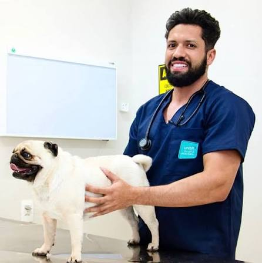
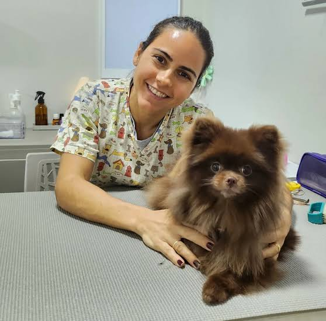
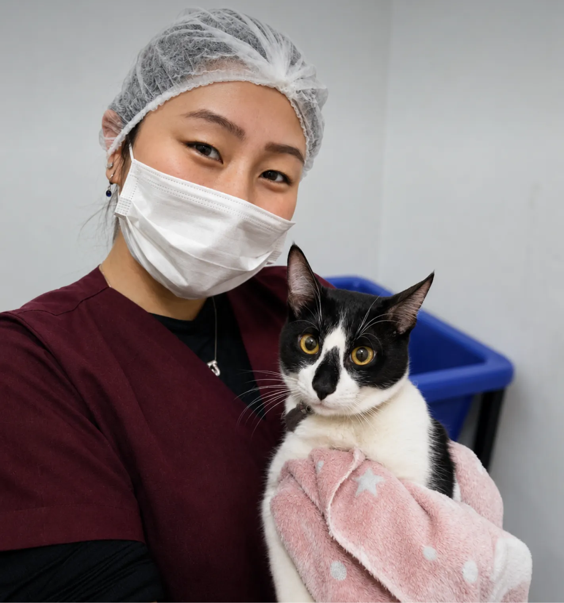
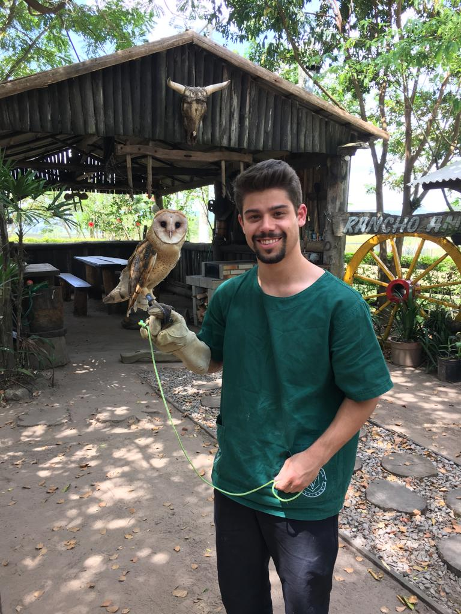
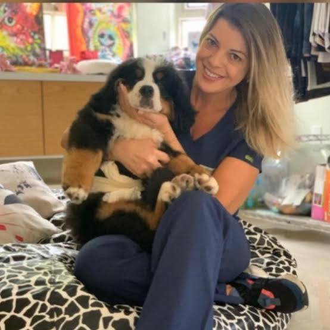
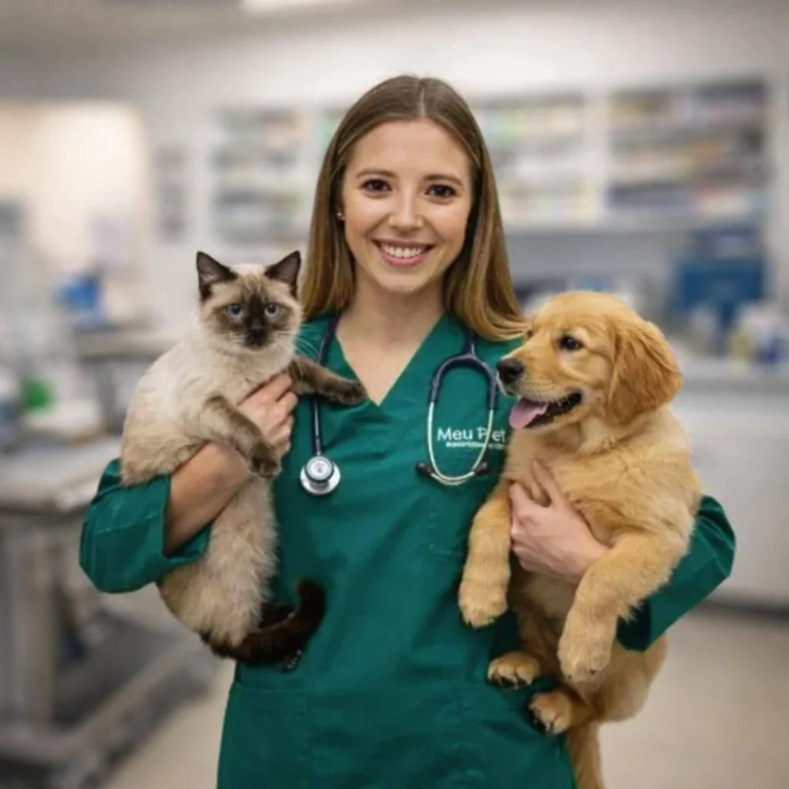
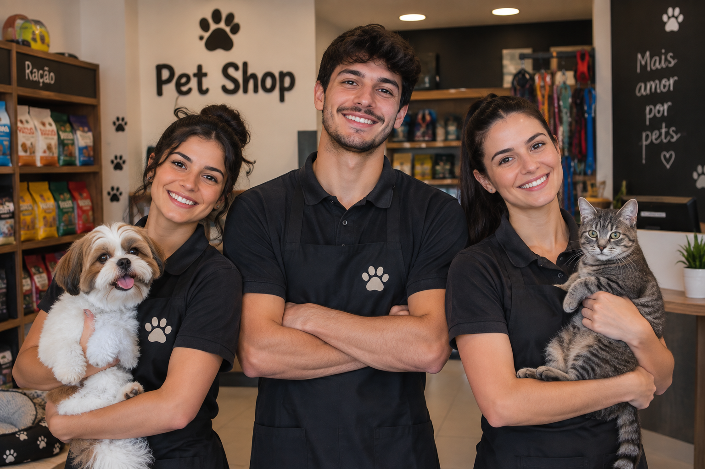
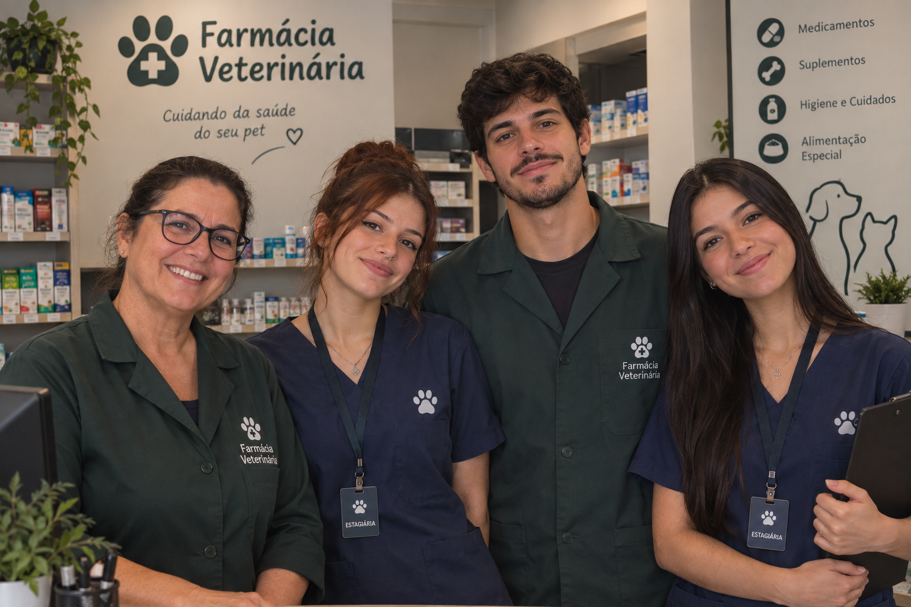

Dr. Yuri Kioko
Médico Veterinário — Cirurgia
Atua na realização de procedimentos cirúrgicos, com foco em segurança, precisão e cuidados individualizados antes, durante e após cada cirurgia.

Dra. Isís Nari
Médica Veterinária — Fisioterapia Veterinária
Atua na recuperação e reabilitação de animais, auxiliando no tratamento de lesões, dores e limitações de mobilidade.

Dra. Beatriz Souza
Médica Veterinária — Especialista em Felinos
Dedica-se ao atendimento de gatos, oferecendo cuidados especializados e uma abordagem que respeita as necessidades e particularidades dos felinos.

Dr. Narciso Lotus
Médico Veterinário — Animais Silvestres
Responsável pelo atendimento de animais silvestres e não convencionais, proporcionando avaliação, diagnóstico e cuidados específicos para cada espécie.

Dra. Vanessa Lisboa
Médica Veterinária — Clínica Geral
Responsável pelos atendimentos clínicos, avaliações preventivas e acompanhamento da saúde de cães e gatos em todas as fases da vida.

Dra. Lili Michaell
Médica Veterinária — Urgência e Emergência
Atua no atendimento de casos urgentes e emergenciais, oferecendo suporte rápido e cuidados essenciais em situações que exigem atenção imediata.

Equipe do Pet-Shop 24h
Atendimento Pet-Shop 24h
Nossa equipe está preparada para atender as necessidades dos tutores a qualquer hora, oferecendo produtos, acessórios e itens essenciais para o bem-estar dos pets.

Equipe da Farmácia Vet 24h
Atendimento Farmácia Veterinária 24h
Profissionais preparados para auxiliar na disponibilidade de medicamentos e produtos veterinários, garantindo praticidade e suporte aos cuidados dos animais.